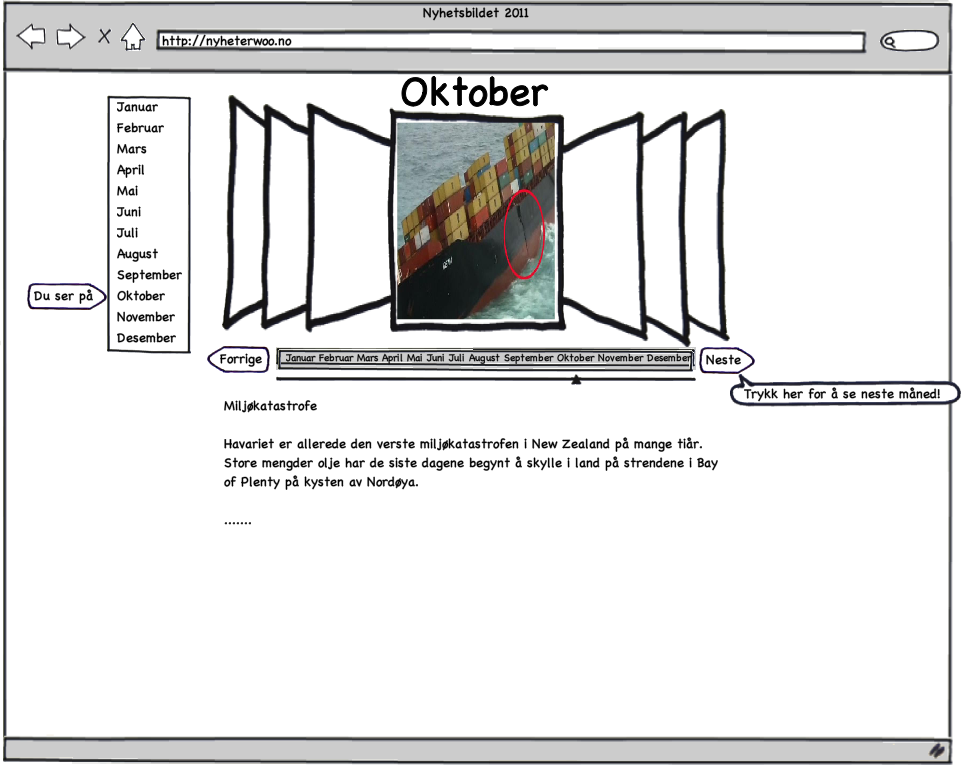

Gruppe 48
Velkommen til Gruppe 48's prosjektside! Denne siden vil omhandle prosjektet vårt i faget Web-Prosjekt (LO136A).
På venstresiden under styringsdokumenter vil dere finne prosjektets dokumentasjon.
På høyre siden er det bilder av alle gruppemedlemmene. Bildene er klikkbare og linker til de personlige hjemmesidene.
Tilbake til toppen
Prosjektbeskrivelse
Formål
Formålet med nettsiden er å vise nyhetsbildet 2011 i korte trekk ved bruk av bilder og utdrag fra diverse nyhetssider.
Grunnen til at vi valgte dette som prosjekt er at vi tror utviklingen av nettstedet kan bli teknisk utfordrende, noe som gjør at vi vil lære mye.
Formålet med nettsiden er, i tillegg til å informere besøkende om de viktigste nyhetsbengivenhetene 2011, at vi skal lære oss HTML/CSS og Javascript.
Det er ikke nødvendigvis et krav at vi har mange besøkende eller at prosjektet er velykket så lenge vi lærer av tingene som går galt.
Tema
Nettsiden skal gi et raskt innblikk i de viktigste nyhetshendelsene som har skjedd i året 2011.
Innholdet vil bestå av utdrag fra og linker til artikler fra diverse nyhetssider.
Vi vil fokusere på større hendelser som 22. juli o.l
Problemstilling
Det er ikke alle som får med seg alt av nyheter i løpet av et år. Vi ønsker at siden vår skal vise en oppsummering av årets nyheter med de viktigste begivenhetene utmerket.
Produktmål
I løpet av prosjekttiden vil vi utvikle nettsidet fra bunnen av.
Målet er at til slutt skal vi ha et nettsted der man enkelt og oversiktlig kan se de viktigste nyhetssakene for året 2011 (og evt. også senere år).
Nettstedet skal helst fungere like godt uansett om man har Javascript eller ikke, det vil være et eget stilark med inverterte farger for enklere lesing av de som har dårlig syn eller lignende. Skriftstørrelsen på siden skal være såpass stor at folk i alle aldre med alle nivåer syn skal kunne benytte siden uten problemer.
Det skal være tydelig hvordan man navigerer siden og popup/notifications skal dukke opp hvis du holder musa over knapper og bilder.
Prosessmål
I løpet av dette prosjektet ønsker vi at gruppen som en enhet skal gjennomsnittlig kunne mer HTML/CSS og prosjektstyring enn før prosjektet begynte.
Hvert enkelt gruppemedlem skal forstå hvordan siden fungerer og er bygd opp.
Vi skal være inneforstått med prosessen i prosjektarbeid og skal enkelt kunne jobbe i fremtidige prosjekter.
Tilbake til toppen
Samarbeidsavtale
Samarbeidsavtalen er en kontrakt mellom gruppemedlemmene i gruppe 48. Brudd på disse reglene kan medføre til et eller annet, i verstefall utstengelse.
§1. Informasjonsplikt
Hvis du blir forsinket eller ikke kan komme til et gruppemøte, må du si ifra til enten gruppeleder eller noen av de andre gruppemedlemmene så fort som mulig.
§2. Gruppside på Facebook
Vi kommer til å bruke gruppesiden vår på Facebook til å oppdatere hva som vil skje fremover, f.eks avtale gruppemøter. Alle plikter å holde seg oppdatert på gruppesiden ofte!
§3. Oppgaver og ansvar
Alle skal delta i prosjektet! Det er enhvers ansvar for å utføre sine oppgaver. Lever alltid i god tid, og til et bestemt tidspunkt! Sørg for at frister blir holdt.
§4. Miljø
Det skal være en åpen og vennlig tone i gruppa. Vi skal hele tiden oppmuntre og inspirere hverandre. Alle skal få lov til å komme med egne meninger.
§5. Gruppemøter
Faste gruppemøter på onsdager fra kl. 12.30 i Datatorget i 4 etg og eventuelt andre avtalte tidspunkt. Sørg for å jobbe effektivt under gruppemøtene!
Tilbake til toppen
Aktivitetsplan
| Hovedaktivitet |
Hensikt |
Viktige oppgaver |
Uke |
| Leveranse 1 |
|
|
|
Bli kjent med oppgaven og med hverandre.
Utveksle ideer. |
Gruppearbeidet kommer til å fungere bedre,
og flere ideer blir satt i verk. |
* Komme opp med ideer og diskuterer disse.
* Finne en måte å utveksle informasjon med hverandre. |
39 |
| Lage problemstilling og diskutere oppsettet på hjemmesiden. Starte med personlig logg. |
Problemstilling må bli laget for å finne ut hva vi skal jobbe imot. |
* Finne problemstilling.
* Utarbeide hvordan siden skal se ut. |
40 |
| Starte utvikling av hjemmeside. Fordele arbeidsoppgaver. |
Komme i gang med nettsiden. Arbeidsoppgavene fordeles slik at ikke en gjør alt. |
* Starte med alt av planer (risikoplan, aktivitetsplan, milepælsplan)
* Fortsette arbeidet med layouten til hjemmesiden. |
41 |
| Diskutere arbeidsprossesen. Legge ut det vi har før leveranse 1. |
Gjøre gruppesiden best mulig før leveranse 1. |
* Bli enige om hva som skal ut på web.
* Levere. |
41 |
| Leveranse 2 |
|
|
|
| Utvikle hjemmeside. Se på nyheter som skal være i arkivet på siden. |
Utvikling av hjemmesiden for at den skal se best mulig ut. Finne ut litt mer om innholdet som skal være på siden. |
* Gjøre siden “finere”.
* Søke etter viktige nyheter som skal være på siden. |
44 |
| Starte på midtveisrapport. Lage skisse til nettsted. |
Midtveisrapporten må bli ferdig før fristen. Skisse til nettsted for at nettstedet skal se best mulig ut. Diskutere i gruppen. |
* Fordele arbeidsoppgaver.
* Begynne å jobbe med midtveisrapporten. |
44 |
| Starte med design av hjemmeside. Evaluering av jobb. |
Dekke kravene som midtveisrapporten dekker. |
* Skrive evalueringsrapport.
* Begynne med design, og skrive litt rundt dette. |
44 |
| Individuell rapport. Lage skisse til sluttrapport. |
Gjøre ferdig det siste som skal til på leveranse to, før innlevering. |
* Alle skriver en individuell rapport, linket til personlig hjemmeside.
* Lage skisse til sluttrapport.
* Innlevering. |
44 |
| Leveranse 3 |
|
|
|
| Skrive om medlemmene i sluttrapport. Skrive om gjennomføringen av prosjektet. Gjøre designet klart! |
Få alt ferdig til tide, vi kan begynne med dette. |
*Skrive om medlemmene i sluttrapporten.
* Skrive om hvordan vi har gjennomført prosjektet.
* Fikse ferdig, og gjøre klar designet til siden.
* Nettsiden skal også være ferdig! |
45/46 |
| Skrive oppsummering og konklusjon. |
Viktig å få med seg oppsummering og konklusjon av arbeidet vi har drevet med. |
* WCAG, sørge for at siden følger AA-standarden.
* Skrive oppsumering og konklusjon av oppgaven. |
47 |
| Finstille alt i sluttrapporten, og styringsdokumenter (om nødvendig). |
Sjekke om vi har oversett noe, hvis vi har fiks på dette. |
* Se over sluttrapporten.
* Se over styringsdokumentene.
* Implementere ekstra funksjoner hvis det er nok tid. |
47 |
| Kontrollere at alle krav i leveranse 3 er på plass. |
Se over oppgaven før den skal leveres inn. |
* Se over hele oppgaven!
* Implementere ekstra funksjoner hvis det er nok tid. |
47 |
| Levere! |
|
|
48 |
Tilbake til toppen
Milepælsplan
| Uke |
Milepæler |
| Uke 39 |
Gruppa møtes! |
| Uke 40 |
Problemstilling |
| Uke 41 |
Gruppeside |
| Uke 41 |
Skrive styringsdokumenter |
| Uke 41 |
Leveranse 1 |
| Uke 44 |
Finne nyhetsartikler |
| Uke 44 |
Skrive midtveidsrapport |
| Uke 44 |
Leveranse 2 |
| Uke 45 |
Skisse til ferdig nettside/design |
| Uke 46 |
Fremføring |
| Uke 46 |
Nettsiden er ferdig! |
| Uke 46/47 |
Sluttrapport |
| Uke 48 |
Leveranse 3 |
Tilbake til toppen
Ansvarskart
Et ansvarskart over hvem som har ansvar for hvilke prosjektoppgaver.
| Gruppeleder |
PL |
PD |
SD |
WU |
LA |
Backup |
| Kristoffer |
Kristoffer |
|
Kristoffer |
Kristoffer |
Kristoffer |
Kristoffer |
|
Marit |
|
Marit |
Marit |
|
Marit |
|
Arthur |
|
Arthur |
Arthur |
|
Arthur |
|
Shari |
Shari |
Shari |
Shari |
Shari |
|
Tegnforklaring
PL - Personlig logg
PD - Prosjektdagbok
SD - Styringsdokumenter
WU - Web-utvikling
LA - Leveranse ansvar
Tilbake til toppen
Risikoplan
Risikoplanen har vi som en oversikt over hva som kan gå galt i løpet av prosjektet, og hvordan vi eventuelt løser problemet. Skala 1-3 der 1 er lavest, 2 middels og 3 høyest.
S = Sannsynlighet, V = Virkning. KT-sykdom = Korttidssykdom. LT-sykdom = Langtidssykdom
Risikoplan
| Navn |
Beskrivelse |
S |
V |
Forebygning |
Løsning |
| KT-sykdom |
Mindre sykdommer (forkjølelse osv). |
M |
L |
Kle seg etter været, spise sunn mat, trene regelmessig/holde seg i form, og vask hendene! |
Prøve å jobbe så godt man kan! |
| LT-sykdom |
Ulykke o.l |
L |
H |
Se begger veier før du krysser veien! Ikke vær så sent ute. |
Jobbe fra sykesenga, eventuelt ekstra arbeid for andre. Hvis det blir for mye å gjøre for de som ikke er syke prioriterer vi de viktigste oppgavene først. |
| Uenigheter |
Uenighet mellom en eller flere gruppemedlemmer, eventuelt store krangler. |
M |
H |
Respektere hverandre, opprettholde god kommunikasjon. Komme frem til felles løsninger. Viktig å si ifra hvis man er uenig :) |
Tredjepartsmeglig, sosialt samkvem. Ha det litt morro! |
| Tidsproblemer |
Forskjeller i timeplan o.l Tidspress |
M |
M |
Planlegge, jobbe effektivt når vi kan. Prøv å møte opp til gruppemøter! |
Ekstra jobb for andre hvis nødvendig. |
| Tap av arbeid/data |
Tap av data som følge av diskkrasj o.l |
L |
H |
God bruk av Dropbox, Google Docs og Git |
Ha data lagret i versjonskontrollert område. Minnepinne, egen Dropbox, ekstern harddisk osv. |
| Lav motivasjon |
Dårlig motivasjon blant enkelte gruppemeldemmer. |
L |
M |
Gruppen må selv bidra til at arbeidsmiljøet er positivt og sosialt. Fordele arbeidsoppgavene likt til alle. |
Gjøre sosiale ting sammen, passe på at alle føler seg involvert og inkludert. I tillegg til det bør vi ha jevne gruppemøter. |
| Faglige utfordringer |
Hvis det oppstår noe faglige, vanskelige utfordringer som er krevende å løse. |
M |
H |
Sørge for å ha gode ressurser til stoffet det dreier seg om f.eks JavaScript. Pugg, pugg! Øvelse gjør mester! |
Prøve å forenkle arbeidet, eventuelt finne en annen løsning på problemet. Snakke med veileder! |
Tilbake til toppen
Prosjektdagbok
29.09.11
Medlemmer tilstede:
- Marit
- Kristoffer
- Shahariar
I dag holdt vi får første gruppemøte, wohooooo! Arthur kunne dessverre ikke komme pga. jobb. Vi ble litt kjent med hverandre før vi begynte å ramse opp temaer til prosjektet. Vi kom med opp med et par ideer, men fant ut at det var best med en tenkepause til neste gruppemøte slik at sistemann kunne komme opp med et par ideer selv. Kristoffer ble utnevnt som gruppeleder, og vi vedtok å benytte Dropbox for utveksling av filer. Kristoffer har begynt med litt koding for en grupeside til prosjektet.
05.10.11
Medlemmer tilstede:
- Kristoffer
- Arthur
- Shahariar
I dag kunne ikke Marit komme pga. krise på jobb. Vi fikk møtt Arthur og fortsatte diskusjonen om valg av tema. Vi ble enige om å lage et nyhetsarkiv med de viktigste nyhetene i 2011. Kristoffer har kommet godt i gang med programmeringen, og foreløpig har vi et utkast til gruppesiden.
12.10.11
Medlemmer tilstede:
- Kristoffer
- Arthur
- Shahariar
- Marit
I dag holdt vi vårt tredje møte. Vi begynte å fordele på styringsdokumentene. Vi vedtok også å benytte Google Docs for utveksling av tekster/dokumenter. Vi kom godt i gang med skrivinga. Kristoffer kom med et forslag om hvordan prosjektnettsiden kan se ut, og vi alle ble ganske fornøyde.
14.10.11
Medlemmer tilstede:
- Kristoffer
- Shahariar
I dag fikk vi fullført styringsdokumentene til leveranse 1. Litt redigering, og finpussing av tidligere versjoner. Dokumentene er nå tilgjengelig på gruppesiden.
01.11.11
Medlemmer tilstede:
- Kristoffer
- Shahariar
- Marit
I dag diskuterte vi litt om funksjonaliteten til nettsiden. Vi fant ut at det er et lite problem som kan oppstå på noen maskiner. Vi har nemlig tenkt å bruke Javascript på nettsiden, og det er ikke alle som har en browser som støtter denne funksjonen. Det blir nemlig et problem med tanke på universelt utforming. Vi har sendt en e-mail til veileder om å få en veiledningstime. Enn det har vi begynt å skrive individuelle rapporter, og fikse på de småfeilene vi hadde på leveranse 1.
02.11.11
Medlemmer tilstede:
- Kristoffer
- Shahariar
- Marit
- Arthur
Vi fortsatte å arbeide med midtveisrapporten + retting av leveranse 1. Vi fikk snakket med en studieassistent ettersom veilederen er sykemeldt. Vi fortalte studieassistenten om problemet, og fikk som svar om å ha en veldig god dokumentasjon på hvorfor vi bruker JavaScript. Enn det har det ikke skjedd noe mer spesielt enn masse, masse skriving! Flott at alle på gruppa kunne møte opp :)
03.11.11
Medlemmer tilstede:
- Kristoffer
- Shahariar
Arthur kunne ikke møte opp idag pga. sykdom og Marit kunne ikke pga. et annet gruppemøte. Vi fortsatte å skrive på midtveisrapporten. Nå begynner det å ligne på noe! Mer spesielt enn det skjedde ikke idag.
14.11.11
Medlemmer tilstede:
- Kristoffer
- Arthur
- Shari
Vi har ikke kunnet møttes på en stund nå ettersom folk har blitt syke. Måtte ha en gruppemøte idag med tanke på presentasjon. Marit kunne ikke komme pga. jobb og Kristoffer er veldig dårlig! *God bedring Kristoffer*. VI fikk fikset en PP, og er så å si klare til presentasjonen.
16.11.11
Medlemmer tilstede:
- Kristoffer
- Marit
- Shari
Idag holdt vi presentasjonen vår! Det gikk ganske bra enn det vi forventet, men vi snakket bare i 5/10 min. Arthur kunne dessverre ikke komme pga sykdom.
22.11.11
Medlemmer tilstede:
- Kristoffer
- Shari
Nå er det ikke lenge til leveranse 3, altså hele prosjektet skal leveres inn! Vi har jobbet veldig lite med dette prosjektet i det siste, og det må vi skjerpe oss med. Kristoffer og Shari diskuterte designet og ble enig om at Shari skulle ta denne samtidig som vi prøvde å finne en løsning til hvordan vi skulle fikse slideren til nyhetsartiklene.
28.11.11
Medlemmer tilstede:
- Kristoffer
- Shari
Vi har ikke fått møttes mye i det siste, men har diskutert veldig mye over nett! Tredje utkast av designet er klart og har satt en frist til å bli ferdig med designet innen onsdag! Kristoffer har kommet godt i gang med sluttrapporten. Men hvor blir det av de andre mon tro?
29.11.11
Medlemmer tilstede:
- Kristoffer
- Shari
I dag fortsatte vi å skrive på sluttrapporten + fikse designet. Vi har kommet med et flott design som alle har blitt fornøyd med. Et par bugs, men dette skal vi klare å fikse. Når det gjelder slideren, fant vi ut at vi heller genererer statiske sider vha. Ruby så vi har noe å vise frem. Ved et senere tidspunkt skal vi finne en JQuery løsning på dette! Marit og Arthur kunne ikke dukke opp idag, men dukker forhåpentligvis imorgen!
30.11.11
Medlemmer tilstede:
- Kristoffer
- Marit
- Shari
Arthur kunne ikke komme pga. han ikke hadde busskort/penger. Marit, Kristoffer og Shari fortsatte å skrive sluttrapport. Kristoffer tok seg tid til å fikse designet, og nå ser det veldig bra ut! Fortsatt en del vi mangler, men dette er ikke noe vi prioriterer akkurat nå. De viktigste funksjonene er inne!
01.12.11
Medlemmer tilstede:
- Kristoffer
- Marit
- Shari
- Arthur
Nå er det bare en dag igjen til prosjektet skal leveres inn. Vi alle i gruppa har et mål om å bli ferdig ikveld med absolutt alt! Idag kom Arthur, men kunne dessverre ikke bli så lenge mtp. jobb. Enn det har vi bare skrevet på sluttrapporten i håp om å få det ferdig veldig fort!
Tilbake til toppen
Leveranse 2
Individuelle rapporter
Tilbake til toppen
Kravspesifikasjon
Her skal du få en kort oppsummering av hvilke teknologier vi skal benytte oss på siden som skal være sluttproduktet, hvilke standarder vi skal følge og hvordan sikre best mulig brukervennlighet.
Teknologier
Vi skal i hovedsak benytte oss de enkleste, og mest grunnleggende teknologier, der sidene blir kodet i HTML og layout i CSS. I tillegg til det har vi tenkt å bruke litt JavaScript for blant annet øking/minking av tekststørrelse. Kristoffer har også erfaringer med Ruby og HAML, noe vi kan ha bruk for på serversien. Et eksempel er å lage et "kontakt oss" skjema vha. Ruby.
Standarder
Når det kommer til standarder har vi tenkt å følge HTML5 og CSS3 standarden. HTML5 skal valideres med HTML's validator og CSS-en valideres med CSS3 Jigsaw Validator. Det skal brukes minimalt med CSS 3.0-funksjonalitet ettersom validatoren ikke validerer noen av de nyeste elementene, og mange browsere støtter ikke de nyeste funksjonalitetene. Vi skal allikevel undersøke om nettsidens innhold er lett tilgjengelig fra nettlesere som ikke støtter funksjonene.
Funksjonalitet
Nettstedet skal fungere i alle moderne browsere som støtter Javascript. Chrome, Firefox, Safari og forhåpentligvis Internet Explorer. Siden skal følge 3-klikks-regelen!
Nettstedet har en enkelt forside. Øverst på siden vil du kunne velge mellom de 12 månedene i året (Januar-Desember). Når du trykker på en måned vil du bli vist en oppsummerings artikkel for den måneden.
Nettsiden skal også ha en "Kontakt oss" og "Om oss" underside.
Universell Utforming
Vi ønsker å følge WCAG sin AA-standard. Dette blir beskrevet som "bør" implementere. Dette er i tillegg griet å lære seg hvis man senere vil utvikle websider.
For å sikre best mulig brukervennlighet og tilgjengelighet vil vi benytte en relativt stor og leselig font-size (16px+) med stor avstand mellom linjene.
Det vil også finnes et kontrast stilark for de med dårlig syn der fontstørrelsen kan økes videre.
Tilbake til toppen
Skisse til ferdig nettsted
I utgangspunket ble denne mockupen laget tidlig i prosjektet for sånn vi tenkte nettsiden kunne bli.

Vi har begynt å utvikle selve nettstedet og har en veldig tidlig versjon på internett
Merk dette er IKKE en endelige versjonen. Alt innhold, design, og URL er midlertidig.
Tilbake til toppen
Begrunnelse av designvalg
I starten tenkte vi stort sett ikke på designet. Vi antok at dette skulle være noe enkelt å lage med tanke på at vi bare skulle ha en enkel forside. Det viktigste er at nettsiden skal være enkelt å bruke. Noen temaer er gitt ekstra oppmerksomhet og vil bli gjennomgått i mer detalj.
Type nettsted
Nettsiden skal stort sett bestå av nyheter og artikler, og er ment som en informasjonsside. Temaet er derfor litt kjedelig, men alvorlig. God språkbruk og design skal brukes som formidlingsform.
Målgruppe
Målgruppen vår er definert som personer som er interessert i hva som har skjedd i Norge i løpet av året. Det antas at personer over 16 er mer interesserte i nyheter enn de under 16, og det kan være fordi nyheter blir mer diskutert i VGS enn ungdomsskolen. Så enkelt sagt kan nettsiden appelere til alle over 16 år.
Behov
Vi må ta i høyde for brukere med spesielle tilretteleggingsbehov. Vi kan ikke dekke alle behov, men det mest grunnleggende. Brukere som sliter med å lese kan eventuelt øke/minske størrelsen på teksten vha. en funksjon vi skal implementere. Det skal også være et eget stilark til de som er svaksynte slik at det blir behagelig å lese.
Utforming av tekst
Nettstedet vil tilby en rekke små, men detaljerte artikler. Vi har tenkt å bruke en enkel, men god språk med tanke på personer med dysleksi, lesevansker osv. Ved bruk av en lettleselig font med stor font-størrelse, en litt mørkere bakgrunn (i forhold til hvit) og stor linjeavstand vil tekst på siden være mye enklere å lese. En fontstørrelse på 16 piksler er MINIMUM på nett for god lesebarhet.
Design
Designet skal sette innholdet i fokus.
Tanken er at det skal være lett å forstå hvordan man navigerer siden og sidens hovedinnhold (artikler) skal være lette å lese.
Siden har derfor da en enkelt meny der man velger måneden man ønsker å se.
Det vil være en "Kontakt oss" link øverst til høyre lett tilgjengelig.
Nederst på siden vil man finne de mindre viktige linkene "Hvem er vi", "Om oss", "Gruppeside" o.l.
Tilbake til toppen
Utkast til siden
Vi hadde en rekke med utkast/skisser til siden. Under her kan du se skissene.
Sitemap
Som du ser ønsker vi at siden skal bestå av en enkel forside hvor alt av innhold er samlet.
Utkast til siden
Dette er det første utkastet vårt. Vårt fokus var mest på hvordan vi skulle få teknologien til å fungere og satte derfor ikke så mye fokus på designet
Det andre utkastet. Den ble ganske kjedelig syntes vi, men vi ville ha noe i den duren!
Dette er vårt tredje utkast. Vi ble fornøyd, men føler at det er noe som mangler. Fargene er satt midlertidig.
Dette er det vi har kommet frem til hittil. Nå trengs det et par småjusteringer til sluttresultatet!
Tilbake til toppen
Evaluering av prosjektarbeidet
Samarbeid
Gruppa har til pbl2 hatt tre gruppemøter. Vi snakket på første møte om at vi ikke hadde så store behov for å møtes så ofte, men at vi burde klare et møte i uken, og heller jobbe individuelt/over nettet. Dette har ikke fungert så bra. Vi ser at vi så absolutt bør møtes oftere, slik at vi kan piske hverandre litt. Vi merker at vi har lagt prosjektet litt på vent, og ser nå at det blir fryktelig mye å gjøre mot slutten før innleveringen. Ellers er samarbeidet bra, når vi først må sette i gang. Dette er alle på gruppen klar over.
Gruppen har fordelt alle oppgavene slik at alle elementene til innleveringen skal være på plass. Alle er flinke til å gjøre det de skal til gitt tid i henhold til planen. Selv om alle føler på tidspresset, så har vi kontroll, og kommer til å være ferdige etter planen.
Fremdrift i prosjektet
Det har ellers ikke dukket opp videre problemer som har hatt påvirkning på fremdriftplanen. Vi ser allikevel at det i forhold til nettsiden vi skal lage er litt vanskelig at vi har valgt java script, og dette er det bare en som kan. Det ville vært en fordel å lage siden i HTML, og vi vurdere om vi burde gjøre om hele prosjektet. Dette begynner å haste, og vi bør komme til en enighet om dette før vi mottar neste innleveringsoppgave.
Ved å bytte til HTML vil alle på gruppen kunne bidra, og vi unngår at det er en som sitter igjen og må gjøre store deler av den kritiske delen av prosjektet.
Vi er i hvert fall på god vei, tiltross for en litt treig start. Alle på gruppen er enige om hvordan fremgangen skal gå, og vi jobber hardt for et godt resultat
Tilbake til toppen
Skisse til sluttrapport
Sluttrapporten skal inneholde en innholdsfortegnelse, en innledning, hovedkapitler, konklusjon og referanse-/kildeliste.
Innholdsfortegnelsen skal være oversiktlig, og hvert punkt skal gi en god beskrivelse om hva det omhandler.
Innledningen skal gi leseren et innblikk i bakgrunnen for og hensikten med sluttrapporten samt. informasjon om prosjektarbeidet og gruppemedlemmene.
Hovedinnholdet skal inneholdet hvordan vi tenkte oss fram, hva vi gjorde, hvordan metoder vi brukte osv.
Konklusjonen beskriver hva vi har kommet frem til, og viser til problemstillingen
Referanselisten skal referere til ressurser som er brukt under prosjektarbeidet som f.eks personer, bøker, nettsteder osv.
Dette er et utkast til sluttrapporten vår. Legg merke til at den ikke er ferdig enda, men punktene/kapitlene som er nevnt under har vi tenkt å ha med.
Forslag til innholdsfortegnelse:
-
Forord
-
Sammendrag
-
Del 1: Startfasen
- Introduksjon
- Opprettelsen av konseptet
- Problemstilling
- Ideer til gjennomførelse
- Gruppedynamikk, samarbeid
-
Del 2: Metoder
- Informasjonshenting
- Metoder og verktøy tatt i bruk
- Risiko og håndtering
-
Arbeidsprosess:
- Design
- Programmering
- Detaljarbeid
- Dokumentasjon
-
Del 3: Resultatene
- Produktsiden (funksjonalitet o.l)
- Tilrettelegging
- Oppdeling av siden
- Sammendrag
- Konklusjon
-
Del 4: Oppsummering
- Hvilke mål ble oppnådd?
- Hvilke ble ikke oppnådd?
- Styrker og svakheter
- Utviklingsmuligheter for siden
- Faglige vurderinger
- Hovedkonklusjon
- Avslutning
Optimalisering for web
Vi tenker å opprette en egen side hvor vi har sluttrapporten. Her skal vi ha en innholdsfortegnelse som skal la deg "hoppe" ned til ønsket "kapittel". Ganske lik det vi har på menyen vår, og lignende det man finner på Wikipedia. Hvert kapittel skal ha en innledning som gir leseren et innblikk om hva kapittelet handler om.
Kort sagt: Sluttrapporten skal se bra ut, og det skal være veldig lett å navigere seg fram til ønsket kapittel.
Tilbake til toppen